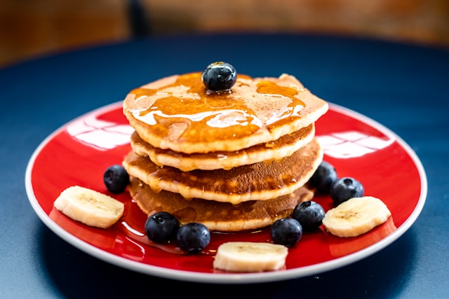

Home
Pancakes

A staple on any breakfast table, this easy dish will start your day off just right!
Ingredients:
Steps:
Prepare the mix: Mix all ingredients in a wide bowl until fully combined. Pour into an airtight container and set aside.
Make the batter: To prepare 4-6 hotcakes, blend the dry mix with the mashed banana and plant milk (or water). Heat a pan, preferably non-stick, and grease it with vegetable oil or margarine.
Cook the pancakes: Using a small or medium ladle, pour a portion of the batter onto the hot pan. You can also pour directly from the blender cup. Cook as you would traditional pancakes, flipping when you see small bubbles form.
Top and serve: Finish your pancakes with granola, banana slices, blueberries, or enjoy the traditional way with plant butter and syrup. Enjoy!
Note: I'm really not sure how this is supposed to bind without eggs or milk, but whatever.